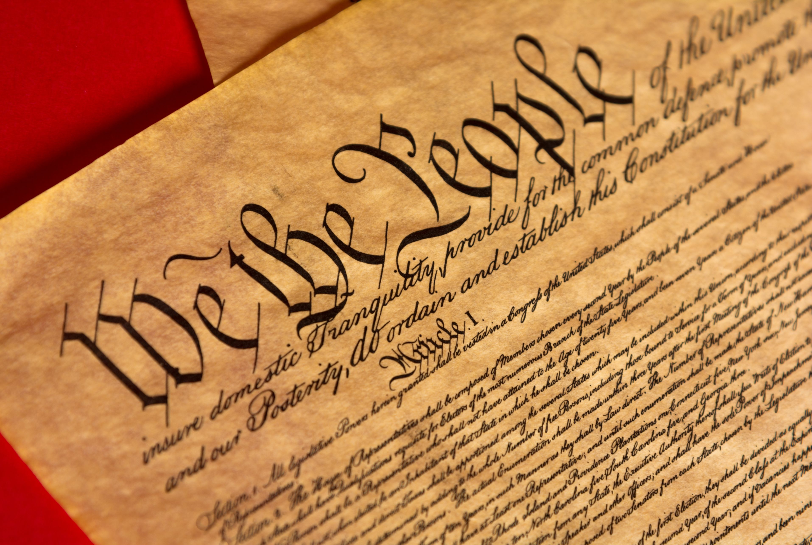

Map of countries by Authoritarian tendency (EIU Democracy Index)
What is democracy?
Democracy is a way in which society is organised. At its core, democracy relies upoin the notion that the people should rule themselves, rather than let kings or other authoritarian leaders do so as was common in the past. Typically democracies organise this through free elections where people are chosen to represent the interests of the nation in the National Government. This elected body of representatives is called a "parliament" or "legislative body".
Essential Elements to Democracy
Democracy requires certain minimums to be fullfilled. For one it requires freedom of expression so that diverging political opinions may participate in national politics. It also requires the freedom of press so that journalists can keep the government in check. Finally it requires seperate branches of government, meaning that the president can't just control the courts or the legislative bodies. Te branches of government have to stay separate and balanced to ensure the balance of power and to avoid concentration of power in one position.
Branches of Government

Executive
The Executive branch of government is that which is responsible for carrying out laws and making descisions on a day to day basis. For example in the UK the exeuctive would be thre Prime Minister and the Cabinet, in the USA it would be the President and their secretaries.
Legislative
The Legislative branch of government is that which is directly elected by the people in most countries (some countries also electe their exeuctive branch), they are responsible for passing new laws and amending existing ones.
Judicial
The Judicial branch is the branch of government which tries and convicts people and organizations of breaking the laws set out by the other two branches. It alsp has the responsibility to keep these branches in check in case tehy do something illegal. This is why it is so important why the branches have to stay seperate and independent; to avoid corruption and misuse of power.
Authoritarian Regimes
Causes
Authoritarian Regimes are government which do not respect the principals of democracy, they may vary in how they present themselves but generally they adhere to similar doctrines of governance. Some Authoritarian regimes are out-right dictatorships or monarchies whilst some disguise themselves as "democracies" which still officially have elected positions but in general disregard any other rules of Democracy.
Authoritarian governments are caused by a dissatisfaction with the current way a society is run. Authoritarian politicians and leaders exploit this to legitimise their grab of power, typically this comes in the form of nationalism or a common attribute of a people to distinguish themselves form others. Like this Authoritarian leaders can claim to fight for a nations identity, people or religion whilst in fact just trying to gain as much power as possible.
Methods of attaining power
Authoritarian governments can appear in many different ways. Some are elected into power, such as Putin and his government which were elected in 2000. Ever since then there has been massive crackdowns on opposition parties and organizations. Another example is the Belarussian dictator Lukashenko who, after he got elected in 1994 dismantled nearly all of the democratic institution established three years before. Lukashenko's government has silenced opposition harshly, sometimes even with the death penalty. Even now, late as 23rd of May 2021, the Belarussian government hijacked a flight to Lithuania to arrest an anti-government blogger.
Some Regimes attain power through force, either by a coup or through a civil war/revolution. Examples include the Chinese government which, through a revolution against the Chinese republic and the subsequent civil war, managed to attain power eventually beating the Republic of China and becoming the regime which we know today.
Democracy Index by Country (2020)
Courtesy of the Economist Intelligence Unit who create an annual democracy index for every country based on the current political situation in said country. The higher the number the more democratic the country is.